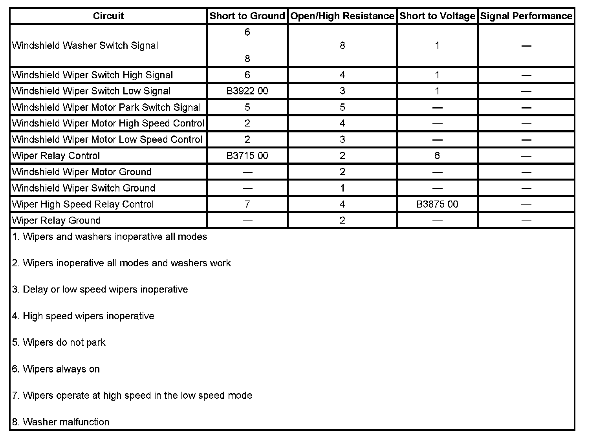
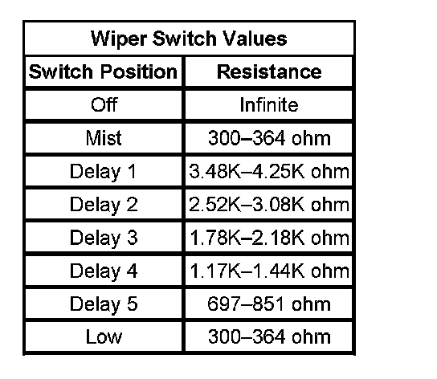

B3922
DTC B3922
DTC DESCRIPTOR
DTC B3922 00
Front Wiper Function Select Circuit
DIAGNOSTIC FAULT INFORMATION

Perform the Diagnostic System Check - Vehicle prior to using this diagnostic procedure. Initial Inspection and Diagnostic Overview
CIRCUIT/SYSTEM DESCRIPTION
The body control module (BCM) monitors the windshield wiper switch low signal circuit. When the wiper switch is place in the low position, battery voltage is applied through the switch contacts, a series of resistors, and the wiper switch low signal circuit to the BCM. The BCM then applies battery voltage through the wiper relay control circuit to energize the WPR Relay. When energized, battery voltage from the WPR Fuse is applied through the switch side of the WPR relay then through the switch side of the WPR HI relay to the windshield wiper motor.
CONDITIONS FOR RUNNING THE DTC
The ignition switch is in the ON position.
CONDITIONS FOR SETTING THE DTC
The BCM detects a short to ground on the windshield wiper switch low signal circuit.
ACTION TAKEN WHEN THE DTC SETS
- The BCM will not activate the low speed output.
- The windshield wipers will only operate in the high speed mode.
CONDITIONS FOR CLEARING THE DTC
- The DTC will clear the current status when the condition for setting the fault is corrected.
- A history DTC will clear after 50 consecutive ignition cycles without a fault present.
CIRCUIT/SYSTEM VERIFICATION
Ignition ON, observe the scan tool Windshield Wiper Switch parameter while rotating the wiper switch. The reading should change between Off, Intermittent, and Low.
CIRCUIT/SYSTEM TESTING
1. Ignition OFF, disconnect the C3 harness connector at the turn signal/multifunction switch.
2. Ignition ON, verify the scan tool Windshield Wiper Switch parameter is not Switch Fault.
- If Switch Fault, test the windshield wiper switch low signal circuit terminal N for a short to ground. If the circuit tests normal, replace the BCM.
3. If all circuits test normal, test or replace the turn signal/multifunction switch.
COMPONENT TESTING
Multifunction Switch
Wiper Switch Values:

1. With the ignition OFF, disconnect the C3 harness connector at the turn signal/multifunction switch.
2. Test the resistance between terminals M and N. Rotate the wiper switch and compare the resistance readings to the values in the Windshield Wiper Switch Values table below for MIST, each DELAY and LOW speed.
- If the resistance is not within the specified range, replace the turn signal/multifunction switch.
3. Test for infinite resistance between terminals M and K while rotating the wiper switch to MIST, each DELAY and LOW speed positions.
- If the less than infinite, replace the turn signal/multifunction switch.
4. Test for less than 5 ohms of resistance with the wiper switch in the High speed position.
- If greater than 5 ohm, replace the turn signal/multifunction switch.
5. Test for infinite resistance between terminals H and L while rotating the wiper switch to MIST, each DELAY and LOW speed positions.
- If less than infinite, replace the turn signal/multifunction switch.
6. Test for less than 5 ohm of resistance while pressing the WASHER switch.
- If greater than 5 ohm, replace the turn signal/multifunction switch.
IMPORTANT: If the switch tests open in any switch position other than Off, test the wiper/washer switch signal circuits for a short to voltage before replacing the switch.
REPAIR INSTRUCTIONS
Perform the Diagnostic Repair Verification after completing the diagnostic procedure.
- Turn Signal Multifunction Switch Replacement
- Control Module References for BCM replacement, setup, and programming. Verification Tests Programming and Relearning